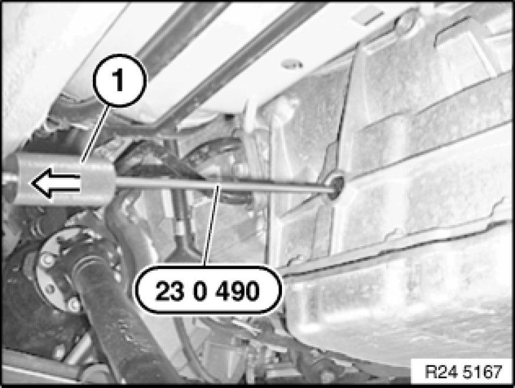

Replacing Sealing Cap for Selector Shaft (GA6L45R)
24 14 005 - Replacing sealing cap for selector shaft (GA6L45R)

Important!
After completion of work, check transmission oil level Procedures.
Use only the approved automatic transmission fluid in this automatic transmission.
Failure to comply with this requirement will result in serious damage to the automatic transmission!

Necessary preliminary tasks:
- Remove rear underbody protection Removing and Installing/Replacing Rear Underbody Protection
- Remove front propeller shaft from transfer case and tie to one side.
Tasks are described in Removing front propeller shaft.

Screw special tool 23 0 490 into sealing cap.
Drive out sealing cap with impact weight (1).

Place new sealing cap (1) on drift (2).
Note:
Drift (2) for driving in sealing cap is contained in repair kit.

Drive in new sealing cap (1) with drift (2) as far as it will go.